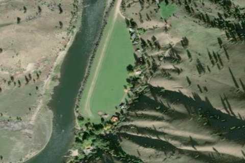

MACKAY BAR
ID28 · ID

Aerial imagery source: Esri, Vantor, Earthstar Geographics, and the GIS User Community
View original source (FAA + Idaho ITD + Shortfield) →
| Identifier | ID28 |
|---|---|
| State | ID |
| Runway length | 1,900 ft |
| Runway width | 200 ft |
| Surface | DIRT |
| Runway | NE/SW |
| Elevation | 2,172 ft |
| Ownership | private |
| CTAF | 122.9 |
| Coordinates | 45.379075, -115.50512361 |
Notes
[idaho_itd] Private Airfield [shortfield] Location Overview Mackay Bar sits along the south bank of the main Salmon River in central Idaho, just a few hundred yards upstream from its confluence with the South Fork of the Salmon River. The airstrip (ID28) is located about 10 miles southwest of Dixie, Idaho, with an elevation of approximately 2,172 feet MSL. The property falls within the Frank Church-River of No Return Wilderness, the largest contiguous wilderness area in the Lower 48 states. Camping & Recreation Tent camping is no longer offered at the airstrip, though pilots are welcome to make reservations for lodging at the ranch. The guest ranch offers a cozy lodge and private cabins with meals included. On the recreation front, guests have access to outstanding steelhead and trout fishing, guided horseback rides, jet boat tours, and hiking trails along the river. A private white sand beach on the Salmon River is available for swimming and sunbathing. Guided elk, deer, and bear hunting is also offered in season for those with a more adventurous appetite. Notes & Warnings This is a private 2,000-foot backcountry airstrip, and landing is strictly limited to confirmed Mackay Bar Ranch guests. Prior written authorization from ranch management is required before any aircraft may land. Pilots should be aware that the Wilson Bar airstrip is located about two miles upstream, and should watch for elk and horses on the runway. The standard approach is made downstream (Runway 18), requiring pilots to fly upstream past the strip, turn around at Five Mile Bar, and set up a roughly 2.6-mile final. The strip comes into view suddenly as the river makes a sharp left turn — if you're too high or fast, go around and try again. The first 200 feet from the river's edge are unusable. There are no tiedowns and no fuel on site; the nearest fuel is at McCall (MYL), 39 nm to the southwest. Early morning flying is strongly recommended to avoid thermals and canyon wind. Backcountry experience or instruction from a mountain flying specialist is advised for first-time visitors. History The area was once dotted with mines built in the decades following the Gold Rush, and the surrounding hills and canyons supported a sizable population of miners fed by locally raised cattle. William B. Mackay arrived with his wife around 1900, built a log home above the river, did some placer mining, and kept a cattle herd. When he died in 1916 he was buried on the hill, and his estate took official title to the land in 1923. The Mackay Bar Bridge was built in 1935 for pack stock, and the area later saw several hundred tons of mining equipment flown in from McCall. The land eventually passed through several owners, becoming a sportsman's resort before being purchased in 1969 by Robert Hansberger, who maintained it for vacationers until selling to caretakers Ken and Andrea Cameron. Don and Andrea Betzold purchased it in 2010, and current owners Buck and Joni Dewey took over in January 2013. When the Frank Church Wilderness was established in 1980, existing private inholdings like Mackay Bar were permitted to remain, and the airstrip was grandfathered in — though it, along with nearby Wilson Bar, faced closure threats over the years before the Idaho Aviation Association successfully fought for their preservation and reopening.